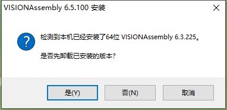

安装包命名规则

| 安装包 | 文件名称 | 说明 |
|---|---|---|
| 主软件包 | VISIONAssembly_(版本号)_Setup.exe | 拥有软件的基本功能模块。 |
| 3D深度图扩展包 | VISIONAssembly_(版本号)_Extension_Range.exe | 安装主软件包的基础上安装此包，要求与主软件包的版本号一致，安装次包后，软件才能使用3D深度图相关功能。 |
| 3D点云图扩展包 | VISIONAssembly_(版本号)_Extension_Cloud.exe | 安装主软件包的基础上安装此包，要求与主软件包的版本号一致，安装次包后，软件才能使用3D点云图相关功能。 |
| AIVI扩展包 | VISIONAssembly_(版本号)_Extension_AIVI.exe | 安装主软件包的基础上安装此包，要求与主软件包的版本号一致，AIVI扩展包安装后，软件才能使用深度学习相应的功能。 |
| IC扩展包 | VISIONAssembly_(版本号)_Extension_IC.exe | 安装主软件包的基础上安装此包，要求与主软件包的版本号一致，IC扩展包安装后，软件会增加对多种相机的支持。 |
安装包命名规则
请使用win7以上的64位操作系统安装本软件，推荐使用Win7 x64 专业版（6.1.7601）和Win10 x64专业版（10.0.18362）。
如已经安装VISIONAssembly，请在软件安装前先关闭软件，并等待进程结束后再进行安装；如已经安装360、腾讯电脑管家、2345等安全卫士、杀毒软件、桌面小助手等安全软件，请在软件安装前暂时关闭安全软件，避免不必要的确认项和文件误删问题，如果不能关闭安全软件，软件包安装过程中可能会弹出很多拦截项，请勾选“不在提醒”，并选择“允许程序所有操作”。

右键主软件包的可执行程序.exe文件，以管理员方式运行。如果有弹出是否允许运行的提示，请点击允许运行。

如果已经安装VISIONAssembly则会提示卸载之前的版本，选择“是”卸载之前安装版本，继续安装当前版本；选择否或取消则不卸载之前的版本，终止安装过程。

之前安装的版本卸载完成后，选择“确定”，继续安装过程。
根据安装向导建议关闭其他所有应用程序，选择“下一步”继续安装过程，选择“取消”会提示确定退出安装过程，选择“是”终止安装过程，选择“否”返回上一步选择。


请仔细阅读“最终用户许可协议”，选择“我接受”继续安装过程；选“上一步”会到上个选择页面，选择“取消”弹出确认取消窗口。
点击“浏览按钮”选择软件的安装路径，推荐使用默认安装路径；选择“安装”继续安装过程；选“上一步”会到上个选择页面，选择“取消”弹出确认取消窗口。
安装后默认会勾选查看更新说明，选择“完成”，整个安装过程完成。
右键3D扩展包（Range和Cloud）的可执行程序.exe文件，以管理员方式运行。如果有弹出是否允许运行的提示，请点击允许运行。
请仔细阅读“最终用户许可协议”，选择“我接受”继续安装过程；选择“取消”终止安装过程。
选择“完成”，整个安装过程完成。

右键AIVI扩展包的可执行程序.exe文件，以管理员方式运行。如果有弹出是否允许运行的提示，请点击允许运行。

请仔细阅读“最终用户许可协议”，选择“我接受”继续安装过程；选择“取消”终止安装过程。
选择“完成”，整个安装过程完成。

右键IC扩展包的可执行程序.exe文件，以管理员方式运行。如果有弹出是否允许运行的提示，请点击允许运行。

请仔细阅读“最终用户许可协议”，选择“我接受”继续安装过程；选择“取消”终止安装过程。

选择“完成”，整个安装过程完成。